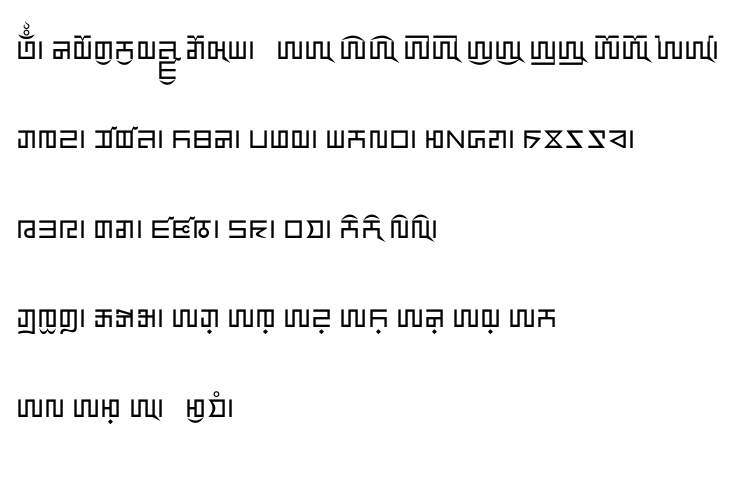

This is a test page for the Unicode Zanabazar Square script, rendered using the BabelStone Zanabazar font at 24 points. Zanabazar Square is a complex script, and at present is not widely supported.
𑨿𑨶𑩂 𑨝𑨢𑨆𑨍𑨂𑨫𑨂𑨢𑨓𑩇𑨥𑨂 𑨎𑨆𑨯𑨊𑨪𑩂 𑨀𑨀𑨊 𑨀𑨁𑨀𑨁𑨊 𑨀𑨄𑨀𑨄𑨊 𑨀𑨂𑨀𑨂𑨊 𑨀𑨃𑨀𑨃𑨊 𑨀𑨆𑨀𑨆𑨊 𑨀𑨈𑨀𑨇𑨊𑩂
𑨋𑨌𑨏𑩂 𑨣𑨤𑨓𑩂 𑨙𑨚𑨝𑩂 𑨞𑨟𑨢𑩂 𑨪𑨫𑨬𑨠𑩂 𑨮𑨰𑨱𑨲𑩂 𑨔𑨕𑨖𑨗𑨘𑩂
𑨧𑨨𑨩𑩂 𑨍𑨎𑩂 𑨥𑨦𑨭𑩂 𑨛𑨜𑩂 𑨠𑨡𑩂 𑨫𑨉𑨫𑨉𑨊 𑨬𑨉𑨬𑨉𑨊𑩂
𑨋𑨼𑨌𑨻𑨍𑨽𑩂 𑨺𑨋𑨰𑩇𑨋𑨬𑩇𑨋𑩂 𑨀𑨋𑨳 𑨀𑨌𑨳 𑨀𑨏𑨳 𑨀𑨙𑨳 𑨀𑨝𑨳 𑨀𑨢𑨳 𑨀𑨫
𑨀𑨬 𑨀𑨮𑨳 𑨀𑨊𑩂 𑨮𑨂𑨡𑨸𑩂


From a treatise on Zanabazar Square by Ugalzyn Lama (L2/15-337 Fig. 2)